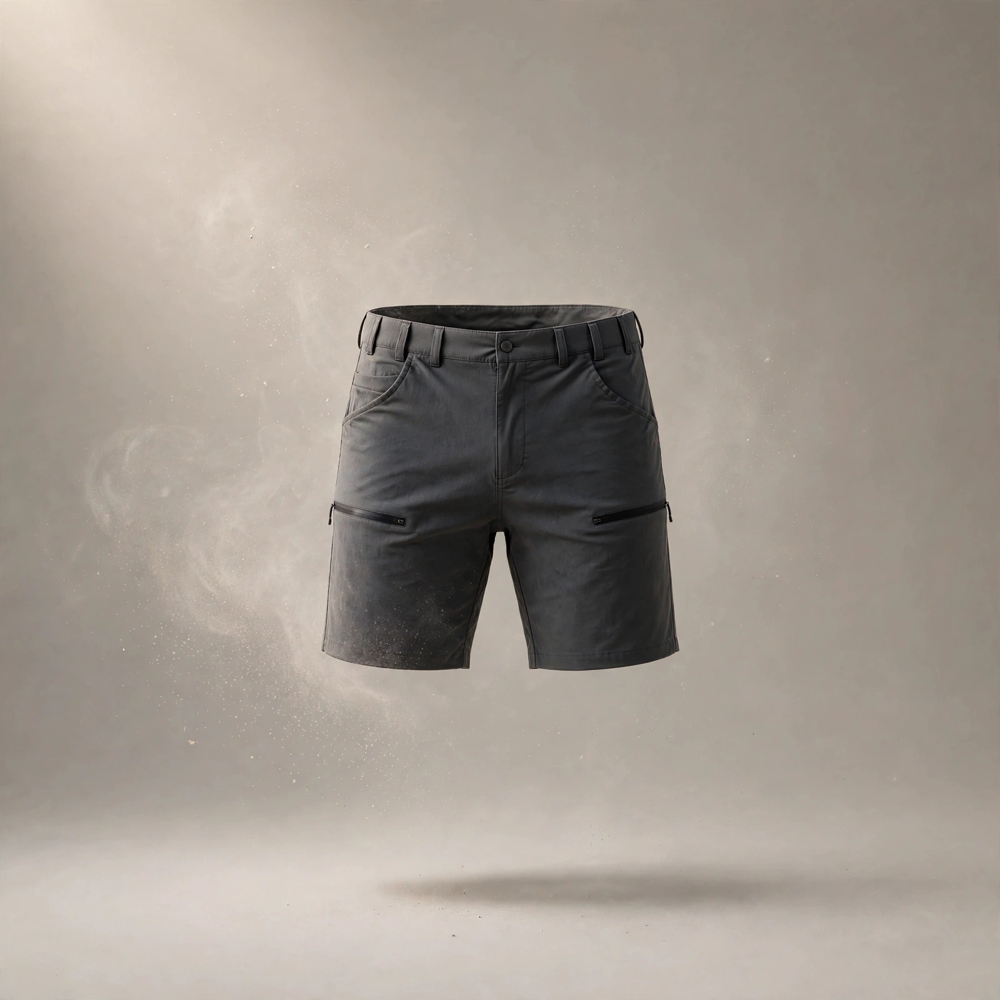
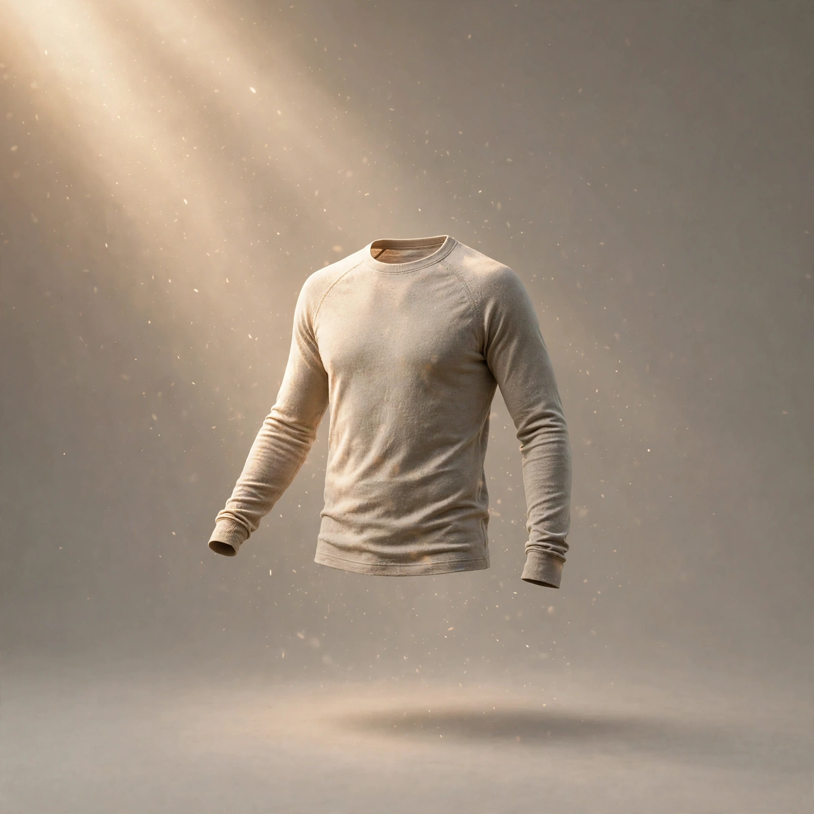
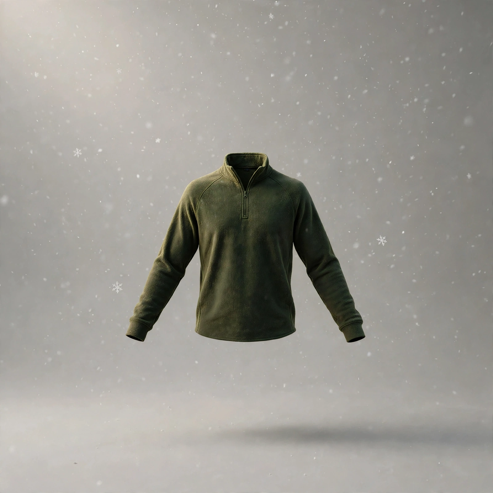
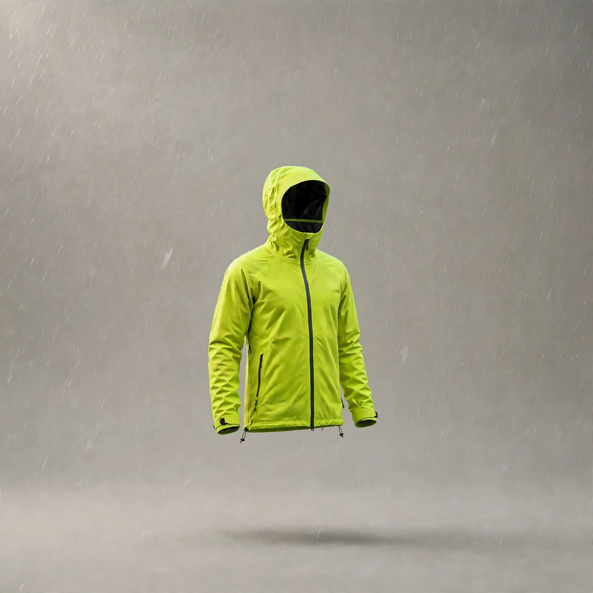

verycoolapparel
Four floating garments with dust, sunlight, snow and rain on clean studio backgrounds, paired with a sunrise alpine hero.





Four floating garments with dust, sunlight, snow and rain on clean studio backgrounds, paired with a sunrise alpine hero.



